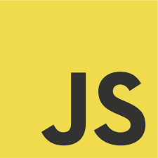

Viisi Erilaista Ohjelmointi Kieltä
 Python
Python
Python on ohjelmointikieli, jolle on tunnusomaista hyvä luettavuus, korkea abstraktiotaso ja kehittyneet kirjastot monilla eri sovellusalueilla.
 Lua
Lua
Lua on kevyt ja kooltaan pieni skriptikieli. Se on tarkoitettu lähinnä ohjelmien helppoon laajentamiseen, mutta sillä voi myös tehdä laajempiakin kokonaisuuksia.
 Java
Java
Java on Sun Microsystemsin kehittämä teknologiaperhe ja ohjelmistoalusta, johon kuuluu muun muassa laitteistoriippumaton korkean tason, luokkapohjainen, oliopohjainen ohjelmointikieli, joka on suunniteltu siten, että siinä on mahdollisimman vähän toteutusriippuvuutta, sekä ajoaikainen ympäristö virtuaalikoneineen ja luokkakirjastoineen.

JavaScript
JavaScript on dynaamisesti ja heikosti tyypitetty, tulkattava, oliopohjainen komentosarjakieli, jonka syntaksi perustuu löyhästi C-ohjelmointikieleen. Kielen semantiikka ja suunnittelu on saanut vaikutteita Self- ja Scheme-ohjelmointikielistä.
 C++
C++
C++ on ohjelmointikieli, jonka Bjarne Stroustrup kehitti 1980-luvulla. Kieli on kehitetty C-kielestä lisäämällä siihen muun muassa olio-ohjelmointiin ja geneerisyyteen liittyviä ominaisuuksia.